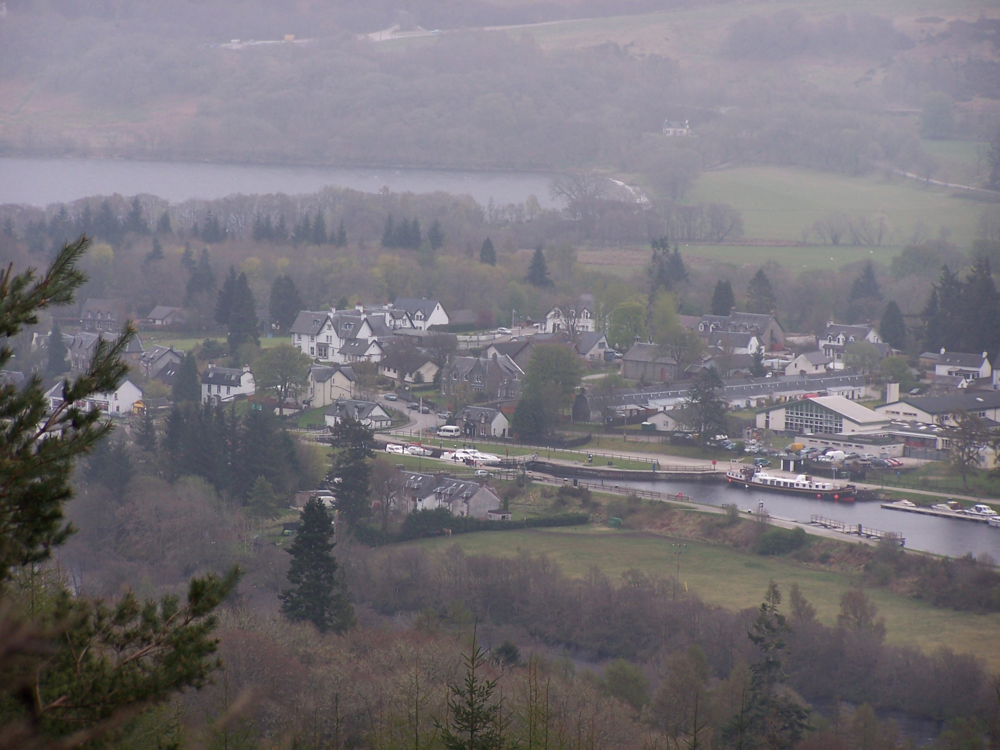

North Of Scotland
Monday April 6th John O'Groats to Dunscansby Head and Back
A short walk to the north easterly point beyond John O'Groats.
I
caught
the train from Preston Station last night. It was the first time I had
been on a sleeper train and I was a bit worried about what to
expect, but in fact it was comfortable, and a good experience. In fact it felt
like the train had
stopped over somewhere in the night because at the start
it was rattling along shaking me from side to side, but then as I zonked out
it seemed to become very still and I didn't wake until gone
6:30am.
Looking out the window at 7:40am the train was just leaving Aviemore
station. There was still some snow on the mountain tops and outside
looked very chilly. I had
been on the train since 12:50am. I
was already feeling a long way from home. One good thing about the
sleeper is that you get a nice breakfast bag containing a coffee, muesli and
yoghurt in a tub, a croissant
and a muffin. It was all nice too. The cabin had a bed, a sink, a
window, but not much else, and not much room to swing a rucksack. The toilet was just down the gangway.
The
train pulled into Inverness at 8:30am. I stepped off into Scotlands grey and cool air. The connecting train to Wick
wasn’t until 10:40am so I decided to have a quick walk around town.
We
have visited Inverness on many occasions, but it was nice to walk about
somewhere familiar as it helped me feel nearer to home. The rucksack
felt quite heavy, and that concerned me a little. I noticed that the shopping centre had had a bit of a
face-lift since I had last been there. After
a walk along the river, then up to the castle and through the closed
shops, I returned to the station and bought a coffee and a newspaper to
pass the
time. The little two-carriage train to Wick via Thurso was
comfortable and not too busy. It serviced all the little towns
along the north east
coast to the top of Scotland. The journey seemed very long. Too long
really. This served to make me feel further away from home and a little
bit down as a result. I noted the stations that I would, in the next
week or so, be walking past. Alness, Lairg, Forsinard and Altnebreac to
name a few. I didn’t know this but the train would be quite a welcome
feature of the first few days as the walk that I had planned crossed it
on a number of occasions. The lady conductor asked
me where Furness Vale was (reading it from my ticket). It felt a million miles
away. The sun was trying to come out as I arrived in Wick
station, but there was a cold wind blowing. I didn't have long to wait
for the bus, then
I was on my way to John O’Groats
for just £2.80. Like the train. the bus deviated about a bit, trying
to pass every dwelling on the northern point. I saw the hotel at John
O'Groats a couple of times before eventually pulling in
to the car park and at last I was there. The wind was blowing and it
was quite
cold. I called Pete the official photographer, following
instructions on the sign, to take my picture at the finger post. As
much as I tried to hide it, I looked as cold as I was on the picture. I had to call
the campsite owner as things were quiet, he turned up in his van
and charged me £8 to pitch my tent. A nice evening so I decided to walk
out to Dunscansby Head
tonight so that I could be up and away in the morning. A nice little
walk along the coast, through a couple of fields with sheep. There
were a few people walking from their cars parked by the
lighthouse. I took some pictures and sat waltching the sea for a while
before returning to my tent. At
home it was raining, and the forecast reported that it was on its way to me overnight. It
arrived after 11pm, the wind was
blowing the tent about and the rain lashed the canvas. It
rained all night but I
was dry in the tent.
Tuesday April 7th John O'Groats to Watten.
A day on tarmac. Long straight back country roads.
18miles approx
It was still
raining at 6am when I woke so I decided to stay in the tent a while. I got up at 7:30 as the rain
had stopped and the sun was out and warm. This was where the walk begins
and what perfect weather for the start. I
felt positive. Every step was a step in the right direction, and how many
steps wasn't my concern. The road out of John O'Groats heads back to
Wick but not for me. I have decided on an inland route away from busy roads and towns. This
route felt more like it would be an adventure to me and was what I needed and had looked
forward to. Why miss out on the real and wild North of Scotland.
There
are many options to choose from, but for me I had decided to
head through the
flow country heading towards a town that I was familiar with from my
bike
ride. Lairg. To begin with I followed the Wick road, but only as far as
the Seaview Hotel. From where I took a right turn at a junction
taking me westward. The road had a few cars on an off, but not far
along the road I was
taking a much smaller road to the village of Canisbay. The
village has a Youth Hostel but it looked dead. The
shop next door was closed too. I was following road signs (a benefit of road walking) to
places that I had only read about or seen pictures of on the Internet.
The very straight road from Gills to Lyth climbs slightly up to a mast.
At this point I took one last look back at the sea, watching a ship passing
between the north coast and the Orkney Islands. This would be the last sight of the
sea until the Coast Path in Devon. Ahead lay a very open
landscape with a few mountain peaks in the far distance. Clouds were
building above those distant mountains
but for me it was blue skies. The wind was still quite strong, however, and I felt quite cool.
It was a simple navigation day with me following straight roads south and west, there were
great views, a sense of real freedom, but no facilities on this route as the named places were simply
farms and the odd house.
By afternoon I
was approaching the small village of Watten. Just
before the village I walked over a level crossing. This was the
railway track
that the train brought me on only yesterday. At the time
this place seemed so far away, but I'd walked here in just a day.
That was a positive feeling. Around the village were small copses of old trees. These were made more
notable by the large number of rooks nesting in them. I was told that a
lot of trees around the old house had been felled and so the ones
that were in the village had become
overcrowded and noisy. I stayed in the Brown Trout Hotel (Watten
has a large
Loch and is known for its fishing). The food was good as was the
room. I was already
9% of the way to Fort William having walked 20 miles. Watten is a nice
little village and has a post office and working phone box that accepts
coins. This, I was to find, would be a rarity. What a great
first day, with good weather, a nice easy walk and a nice place to stay. Just what I needed. The forecast was for tomorrow is rain.
Wednesday April 8th Watten to Altnabreac
A mixture of road and forest trail walking.
19miles approx
As
forecast it was raining at 7am but it had stopped by the time I left
the
hotel after nine. A great breakfast, if anything it was too much
really, porridge, full cooked breakfast and toast. I popped round the
corner to buy supplies from the Post Office,
the owners asked where I was heading and were surprised that I was walking
to Lands End. I was following roads to begin with as I headed out to Mybster and then on
to Westerdale, both just a couple of houses on the roadside. As I walked the clouds grew darker and by Mybster I was
in my waterproofs and cape. Westerdale has an old Mill by the river
which was nice to see even in heavy rain. The post office here is just
a house with a sign. No facilities today then. After Westerdale the road becomes a driveway to the Strathmore
Lodge. The
owner of the Lodge, Patrick Sinclair, pulled up beside me on his
motorbike. We talked for over twenty minutes about the wind turbines
that were encroaching on his property. He operates stalking holidays
and feels that the turbines will affect his business. He has ideas
about using tidal differences between Glasgow a Edinburgh to generate
electricity, but is having difficulty having his ideas heard. The rain
was coming down again so I pushed on. It was nice talking to Patrick. I
passed his Lodge and not long after, the tarmac gave way to an orange
sandy forest track.
Huge swathes of forest plantation are set out
in the flow country. The peat wetland and moorland seems to stretch out
for ever though, a magnificent landscape that needs to be experienced, and needs to be seen
on foot. Cars aren't permitted on the forest track anyway. As I entered the trees, the rain stopped and the sun came out and I was soon dry and warm.
The
track made for easy walking, there were big birds and deer all making use of the forest for cover.
I followed the track until Altnabreac where the railway line cuts
through the forest. There is a station here, but you would need to flag
down a train as it won't stop otherwise. There are about three
houses (the old station being one) and not a lot else. I decided to
pitch my tent on a flatish bit of  grass beside the railway line about a mile before the station. The sun was out and I sat listening to the radio.
grass beside the railway line about a mile before the station. The sun was out and I sat listening to the radio.
I
was planning a
short day tomorrow so decided to have a lie in in the morning. It was
still light at
9pm. It was so quiet. A few trains have passed, but other than
this
all I could hear is the wind in the trees. There were a few times in
the
night that I woke and could hear what sounded like a dog in the
distance but sometimes coming closer. Could it have been a werewolf?
These are the thoughts that go through your mind when you are alone and
miles from anywhere.
Thursday April 9th Altnabreac to Forsinard
Forest trail and a little road walking.
13 miles approx
It
was a cold night, but I had a warm lie in with the sun on the
tent. The wind was blowing in waves across the trees through the
night. It was nice to listen to it approaching from  a long way off, getting louder as it approached and then wooshed overhead. I've never experienced this before. I was packed up and making progress by 10am. There was an large eagle perched on the fence between me and the railway line. Just as I turned the camera on it took off and soared high and away over the trees. Typical.
a long way off, getting louder as it approached and then wooshed overhead. I've never experienced this before. I was packed up and making progress by 10am. There was an large eagle perched on the fence between me and the railway line. Just as I turned the camera on it took off and soared high and away over the trees. Typical.
A
mile down the track, I
crossed the railway at Altnabreac and continued on through the forest.
There were great views again today, the flow country is absolutly huge.
Approaching Sletill Hill there are large areas of
forest that have been felled by the RSPB. I was told that this is in an
attempt to return the land
back to peat and heather moorland. The trees have just been
chopped and
left, and now lay dried out like skeletons in the growing heather.
Walking was quite easy on the sandy
track, but I could see my route winding on for miles ahead making
the walk to Forsinain seem even longer. From here I followed a small single
track road to Forsinard, and the hotel. Forsinard has about four
houses, the hotel and a railway station.
The
hotel is similar to the Strathmoor Lodge in that it offers stalking and
fishing holidays and that it is literally in the middle of nowhere. John the
owner and his son are the gamekeepers in the Forsinard area. It is
their job to manage the population of deer and other animals on the
land. It seemed they have a particular dislike for rabbits. At first I
wasn't impressed but talking and listening to John I began to understand the need.
John
is an ex Royal Marine and served with the SAS too. Not a guy to argue
with then. He is a really interesting person having experienced a lot
in life. The room was nice, the
food was really nice. I had a steak with chips and onion rings,
and I can safely say that
it was the nicest steak that I have ever had. I talked to John for
several hours and had a few beers as a result. I popped out to look
around, there is a phone box beside the railway station that allowed
the use of
coins, but it didn't work. The station has been converted into the
RSPB office, though it still functions as a station too. It was very
nicely presented. John told me that the RSPB people live in one of the
houses next to the station. He told me that a stag can be a very
dangerous animal especially in rutting time. That an adult stag
can lift a man off the ground with its antlers having very stong neck
muscles. He said that his wife used to feed one, and that it became
quite tame, but that one day a tourist staying at the hotel was
aproaching it, John was watching and realised that it was acting
aggressively towards him so he took his rifle and told the guy to back
away slowly. The guy was ok and the stag continued with its business
and so he didn't shoot it. I asked if the stag still visits. He told me
that his neighbour had shot it not long after. Nice. By the way
his neighbour lives 40 miles away, I guess they don't talk over the
fence then.
Friday April 10th Forsinard to Loch Choire
A mix of road and Keepers tracks.
25 miles approx.
I had a
great cooked breakfast, probably the best of the whole walk. Before I left, I talked to John
for an hour about the route to Loch Choire and his army experiences. He
told me that there is a bothy at the Lochside. I was expecting a
long full days walk, so I headed on at 10am. John has had
such an interesting life, I could have talked to him for days.
The
sun was shining. I was back on the single track A897 road then towards Kinbrace, the
next town (if you can call it a town having just a few houses, a chapel and a station)
that is 7 miles further along. Again the roads run very straight. The
mountains that stayed on the
horizon for the last two days were suddenly now along side me. Signs on
the roadside warn about crossing the open country at certain times due
to hunting with high-powered rifles. I was staying on the road anyway.
The railway line ran alongside the road here as far as Kinbrace. Two or
three cars passed me on the road. It must have been rush hour. At
Kinbrace another sign
warns of logging trucks that use the B871 road as it took me
westward. It
was Good Friday, which perhaps explains why I only saw one truck and
two cars on the whole road. A few miles further up the road, at
Badanloch Lodge I joined a
sandy track towards Loch Choire. The clouds were building over the
mountains again and the wind picking up.
The landscape here has to be seen to be believed. It is difficult to
describe,
rugged mountains, great open plains and large expanses of water and
heards of deer running
wild. It is hard to take in when you are the only person around, and
haven't seen anyone all day.
I
walked for quite a few hours along the track before eventually
turning in to a wide glen formed between the mountain sides of Ben
Kilbreck and Ben Armine. At its base is a great expance of water ,
Loch Choire. In the trees at the head of the loch stands the Choire
Lodge, a large Victorian looking house. Just before the lodge the
track turns more
rugged as it heads up the side of the Loch. Mobile
phones and radios don't get any signal in this Glen.
I
pitched the tent about
half way up the loch-side beside some large pine trees, marked as
Altnalra on the map. A strong cold
wind had picked up so it was nice to get under canvas. Even with the
waves
lapping at the shore and the wind howling through the trees, I was
asleep
not long after. At this point I had walked approximately 75 miles. If
you want to feel in the middle of nowhere in the UK. This is as good a
place as any, being at least a days walk from any town and towns don't
always have shops. Add to this the fact you get no mobile signal or
radio. You feel alone too. I woke a few times, the wind in the
trees was good company.
Saturday 11th April Loch Choire to Lairg
Indistinct tracks through peat moor then forest track and road walking.
18 miles approx.
It
stayed
windy through the night and cold too. I got up at 7am and
scrambled out of the tent just as the sun peaked over the
mountains into the
glen. I was glad of the sun as it was still quite cold. I had a very quick wash in the freezing water of the loch and packed up in a hurry to warm up. I walked
hard for
the mile to the end of the loch before rounding the end on some
fine sandy beaches. I had to cross a
couple of rickety suspension bridges before joining a path up and out
of the glen
rising up along a rocky river. Luckily the river water was low as I had
to
cross it a couple of times on the way up the Corrie nu fearia. It was
quite a steep climb, I was warm in the sun and out of the wind, so
I was down to a t-shirt. At one point I took
my eye of the path and went up to my knees in a boggy pool. Nice. I
eventually crested the top and disturbed the largest herd of deer that
I'd
come across on the walk so far. They moved off in a sweeping wave down
the
valley, it reminded me of Jurassic Park. What a vista I was looking
down on a huge peat covered landscape. I stopped to change my
socks which were also peat covered and soaking wet from the pool.
The
path was pretty vague, not being at all popular, but I followed the largest of the river cuttings
in the peat as it headed off down the broad glen. I was heading to the little homestead of
Dalnessie, which was just visible in the far distance. Walking was a
bit difficult. Back at the Forsinard, John had warned me that the bridges on
this route were often washed out by the winter rains and I could imagine that in
wetter conditions this would be a really tough walk. The river grew
stronger and faster as I made
progress. There were some remains of bridges that had been made from electricity
poles, these had been badly distorted but were still just about usable. At some points,
lower down the glen, I followed tracks that had been made by large tracked vehicles, these
actually made for worse walking as the
ground they covered was mostly very squelchy. I eventually found
a gravel track that took me into the cluster of houses that made up
Dalnessie. There were a couple fairly
new ones with the others being much older -one a keepers cottage.
I don't
know why people choose to live out here, but I guess that it has been
made
easier with the car. After a good, four mile hike along a fairly
straight forest
track, I arrived at the road between the Crask Inn and Lairg. Just
before the road I got some signal on my mobile and called home and
booked a hotel for the night. I made good progress
along the single track road and in the sunshine soon arrived in Lairg.
Unlike the other places I had walked through on the last two days,
Lairg has shops, pubs and places to eat. The
last time I was here I had ridden from Bettyhill on a long 90 plus mile
day to
Ullapool.
I found the Lairg Highland
Hotel up the main road opposite the post office. The hotel has a modern
interior with a nice room. Lairg has a few shops including a Spar so I
popped out and bought supplies for tomorrow. I had planned tomorrow to
be a short day to
Bonar Bridge but being Easter weekend I couldn't get a room, so, checking
my maps I decided to change my plans and bypass Bonar Bridge
by crossing the
railway bridge at Invershin and then pressing on to Glean More from
Culrain.
This would then be another long 25+ mile day. I managed to get everything washed and dried before getting my head down.
Sunday 12th April Lairg to Glean Mor
Road walking for most of today with a few miles of Track at the end.
25 miles approx.
After a good
breakfast and collecting a packed lunch from the hotel, I set out up the
Ullapool road and then off on a small single track road towards Shin. After a few miles with a few cars, I stopped
at the falls of Shin. The carpark and paths were very busy with people out on this Easter
Sunday. It was still sunny but with a bit more cloud offering some
shade at times. Not much further on, at the end of the road, stands the
old stone Shin Bridge. However this was uncrossable, old and crumbling,
with warning signes. A pity really as it looks like its being left to
rot. Now I was on a main A road for about a mile before I headed
up to the railway station at Invershin. A path lead
back down and across the road and over a mezzanine walkway type
bridge tied to the
side of the old stone railway bridge. I had been on the train from Inverness as it crossed this bridge a few days ago. It
was a great airy crossing to
Cullrain, and cut a large corner for me. I was soon on the minor road
to Carbisdale Castle YHA. There then followed a long walk up a single
track road alongside the railway line. Before Ardgay I turned to follow the
narrow Strathcarron road. This is where I left the small railway
line for good, it also was the point where I had walked over 100 miles.
A few new houses were being built
along the glen but it is so very sparsely populated, and is very very
long. I stopped and sat on a bench by the river for lunch.
It
was a long day already and I was feeling fatigued. I pressed on and on and
after an eternity I
reached the end of the road and a phone box at Croick. The phone didn't
accepted coins but luckily I had a phone card. With no phone signal I
decided
to call Lorraine and my Mum to let them know my progress. I then turned
down towards Almat Lodge and on to Alladale Lodge on gravel tracks
for three miles or
so. On reaching the lodge I crossed the river on a bridge that I nearly
missed and followed a gravel track over and into Glean Mor. This is as
the name suggests a very deep Glen with high, dark mountains rising up
at each side.
I
walked on down into the Glen, looking for a good place to pitch the
tent. The sides were a bit steep to begin with but, a mile or so in,
near some old sheep pen buildings I found some flatish grassy areas. Just
before the sheep pens I came across some wild boar. They were behind a
large fence
that looked quite new. The fence cordoned off a vast area
of the hillside with warning signs about wild animals. It seems that
boar are being re-introduced, in a trial at least. There were a couple
of them looking at me through the fence licking their lips. So as not
to be pig food I walked on a mile looking for a place to pitch.
As
I was setting up the tent I noticed a couple of people descending down
the steep mountainside towards the landrover track. They continued on
back where I had come from. Then within minutes a landrover passed. All
of a sudden it didn't seem quite so remote, but it was. I was miles out from
the nearest town and after a long day of over 27 miles I was drained
and feeling quite low. I reminded myself that tomorrow would be a
shorter day and I was booked in a nice hotel and in addition the
forecast was for more sunshine. I had no phone or radio again so I
listened to music on the phones MP3 player. I slept well with a very quiet
and still night. All that I could hear the rivulet trickling beside the
tent. It was nice.
Monday 13th April Glean Mor to Inchbae Lodge
Landrover tracks all day.
15 miles approx.
It
was a cold night again and I had to put my fleece on to stop me
shivering. In the morning I decided to have a bit of a lie in until 8am. Getting out of the
tent I was very surprised to find a heavy mist had come down. I
could hardly see 10 foot in front of the tent. The sun was out and I
could feel it through
the mist so I guessed that it wouldn't be long before it cleared. As I
started off I
saw a large heard of highland cattle just metres away. I'm glad they
didn't decide to wander over to my tent in the night, as I'd have been
squashed. One let out the loudest moo when It saw me approaching in the
mist, they were just as surprised to see me in this remote glen.
I
crossed a cattle grid into an area that had been newly planted with
trees, it seems that they are trying a few things here. A few miles
further on I was climbing up the other end of the glen past waterfalls on
a less modern landrover track. The blue sky started showing
through the breaking mist from here. I was heading for an
aerial rope bridge, which was shown on the map as the way to cross
the river, but instead found a wooden bridge in its place. This
was a bit of a relief really as the river was quite wide and rocky.
A
little house sat empty on the other
side of the bridge, it seemed out of place in this middle of absolutely
nowhere. I understand that the Deanith Lodge is let out to people for
holidays, but noone appeared to be home when I was passing. Over
the next rise I was dropping down, in the glorious sunshine,
towards loch Voich. There followed a nice warm walk along the loch
side, the mountains on either side still had some snow on them. I saw
somone down by the Loch at Lubachlaggan - a small derilict house, he
waved as I passed. Not lnog after he passed having been picked up in a
range rover.
There
followed a
steep climb up and over Meallan Donn which then dropped down into
Strath Rannoch. I took this route to make sure that I had no road
walking today. After a small river ford the track took me through
some trees and a
small farmstead with highland
cattle and sheep. Then after some forest
road I was on to the tarmac road just outside the Inchbae Lodge
Hotel. Phew, this was a hot day, with little shade, so I was glad to be
inside. The hotel
was just what I needed. A really nice place, a great room and for
dinner
a really tasty curry. The room had two leather chairs, a full size TV,
a power shower, and as much coffee and biscuits as you want (you simply
refill the tray in the room from a supply on the landing). I was
feeling good and had already walked as far south as Inverness.
Tuesday 14th April Inchbae Lodge to Contin
Forest Tracks all day.
14 miles approx.
Looking
out the window the sun was already shining at 7am. I ate breakfast
in the conservatory then headed out. I was following
the edge of main road for the first half a mile  before a bridge and
forest track allowed me access to the trees. A large amount of the
plantation forest had been felled with the views were improved as a result, but
this landscape offered no shade on another very warm day. The track stayed
high above the road but eventually joined it just beside the old road
bridge that crosses the Black Water river. The new concrete bridge
crowds the old one a bit. The old one allows for pedestrian crossing.
before a bridge and
forest track allowed me access to the trees. A large amount of the
plantation forest had been felled with the views were improved as a result, but
this landscape offered no shade on another very warm day. The track stayed
high above the road but eventually joined it just beside the old road
bridge that crosses the Black Water river. The new concrete bridge
crowds the old one a bit. The old one allows for pedestrian crossing.
A signed
forest track now lead all the way down the glen following the river
side.
The trees here were still in place and gave some shade. Reading
accounts on the Internet this path promised to be a great walk with
lots to see and this was the case. There weren't many people about,
being midweek,
so I made good progress. The river flows through a few rocky
gorges with some lovely and wild waterfalls. The old bridge a mile down
river at Little Garve is a much better example as the new road takes a
different route. I decided to take a
half-mile detour to Garve Village to get lunch or an ice cream, but
this
wasn't a good idea as there are no shops in the village at all. There
is a train station, a church and about 30 not so nicely presented
houses. I circled through then returned to the track where I
started the detour. The track continues under Strathgarve Lodge on what
was a farm track through the farm buildings and out the other side. It
wasn't clear. I followed a forest track in and out of trees around Loch
Garve and
after a little worthwhile detour to Rogie Falls, I eventually arrived
at
Contin. I found the campsite just off the main road and pitched my tent
by the river.
There
is a one-stop shop at the entrance to the site. It wasn't busy with
only one
other tent in the field and a couple of camper vans. I paid a guy who
emerged from one of the caravans £5 for the pitch.
The shower was
ok, but the only washing machine was out of order. I planned a very
long day tomorrow so after visiting the shop and calling home I decided
on an early night.
Wednesday 15th April Contin to Cannich
Some track and paths but a lot of single track road too.
23 miles approx.
I
back
tracked along the road a short way to the old bridge. After yesterday,
where I was following a
well signed path for a lot of the time it seemed strange to turn up at
an unsigned farm
driveway. No footpath signs, no obvious right of way. But this being Scotland you have access
rights without signed routes. It just takes some getting used to. It
felt even more strange when the drive
looked to end amongst the busy collection of farm buildings. However it
didn't, I just had to get through the
buildings and out on another track at the back. On my map this would
lead me to
a dam holding back Loch Achonchie. This looked to be the only place to
cross a broad river, however as I
approached the dam I came to a padlocked gate. Having looked down to
the river and judging that I would need a boat to cross it, I
had little choice so I climbed the gate and headed up a now tarmac driveway. This was more than a
dam, it was a working hydro-electric power station with lots of people
with yellow helmets on it. I carried on anyway, with the only other option
being to go all the way back. I was already half way over but decided to ask a couple of blokes on the top if
I was ok to cross anyway. They told me that there was public access across the
dam. So why the locked gate then? Anyway, over I went and on to the other
side of the river. It was starting to get quite cloudy now and
threatened rain. I followed a small single-track road to the Fairburn
Lodge country house estate. A very grand, castle like building with its
outbuildings now used for outward-bound activities. The
Lodge itself looked like it was used for business meetings and such
things. I
progressed through the grounds heading along forest tracks down to the
river Orrin. Having see many pictures of this area in the snow and ice,
the Orrin falls proved to be quite disappointing, a bit of a
trickle between a set of weirs. I guess that some more rain might have
improved things for the falls at least.
After
passing a gate house at the end of a driveway, I was on to a short
section of road through Altgowrie and then on another gravel driveway
to and around Auchederson farm passing through a high gate in a deer fence on to open
moor land. This was a very dark and bleak landscape with low cloud
threatening rain. I imagine that behind the cloud there were great
views of nearby mountains, but
the mist seemed to make this a long and slightly dreary stretch
following a hardly
used and very squeltchy and boggy
path. Landmarks to look out for were some small lochans followed
by a small house at Tighachrochadair which would mark a point to
cross to the other
side of the glen. I eventually came to a point where I could
see the house but there was no clear
path down to it, so I made my own way through the braken. I then had to
cross the shallow river using slippy rocks as the old bridge looked
long ruined. I walked through
the abandoned old buildings, having a look in the windows to see no
sign of life before climbing up along a very wet ancient and overgrown
rocky track on the other
side.
I eventually climbed to meet a good more modern landrover track and followed it steeply to
the head of the hill. I met an elderly
couple walking the other way, they were heading to Contin. I continued
on the track over the hill and down the other side. The cloud had
lifted by
now and the sun was out and hot. The track was a bit up and down but
eventually came to some trees, which offered some cooling shade .
At the bottom of the hill the track joined the A831, which I
walked along to Struy Bridge before taking a
small single track road to the far side of the glen. I was now onto a
very long road walk section
up Strathglass to Cannich.
It
was so hot I had to stop and change my shirt and put on some extra sun
cream half way up the road. Cannich was a nice little place. The
campsite was
great with a laundry and hot showers. It wasn't too busy either. I
pitched the tent and
walked into the village for supplies from the Spar. The village had a
concrete retro style hotel building that was totally out of place and
appeared to be in a state of disrepair. It was empty. The campsite was
quiet at night, I washed and dried all my clothes preparing for another
long day
tomorrow. By now I was starting to think ahead to Fort William.
Thursday 16th April Cannich to Fort Augustus
A short section of road then tracks and paths.
23 miles approx.
I was up
early again with a long day ahead. On the move by 7:15am, I walked past the Spar but it was shut
this early in the morning. I continued along the road towards Tomich and passed the power station at the
junction in the road just before Fasnakyle bridge. As I approached the
bridge a large heard of cattle panicked when they saw me
and ran onto the road. Luckily they then turned left at the junction stampeding away
from me. It seemed strange that such big creatures, some with
monsterous horns would run away from me. They were bundling along a tiny single track road. I
wouldn't want to be in a car coming the other way with over twenty
cows crashing towards me. The
day had started dull and misty again even though the forecast was
for sunshine. I continued up the road to
Tomich then more of a dirt track towards Plodda falls. These falls
are a real tourist attraction and I was looking forward to getting
there early and having the view to myself. However a
sign read that the footpaths up to and around the falls were closed for
maintenance, so I couldn't even get to
them.
Instead I headed up on a path signed for Glen Morriston. This was
a steep climb up through the trees and into the low cloud. On exiting the
plantation the path broke out into open moorland where I couldn't see
very
much at all. There was supposed to be great views and some lochans as
milestones up
here but I saw nothing but cloud and heather. The climb went on
and on, and I continued not knowing if I had reached the summit due to the mist.
I
eventually reached the top at over 600m. With no views at all, not even
the lochans or the larger Loch na Beinne Baine that was right beside
the track, the walk up seemed to go on for
ever. Now the track dropped down and the visibility started
to improve. As I approached Glen Morriston I met a guy pushing his
bike
up the steep path from the road. He told me he does this route a lot
and that he lives in Cannich. He looked knackered already and had a long way to go. He
had come from an all night drinking session at a Ceilidh and was
feeling a bit out of kilter. I took a sneeky little path though the
trees to join
the A387, which I followed for a mile to a track marked the 'Old
Drovers
Road to Fort Augustus'. I decided to grab the chance for a sit down at
a picnic bench and eat a scotch pie and
crisps.
I didn't hang around long though before heading up through the trees.
The
mist thickened as I gained height.
A mile further on the track turned hard left onto the old Military
road. This wasn't a clear path with no marking or signs on the ground.
As I continued to climb it started
to
rain so on with the waterproofs. The wind picked up too as I left
the trees and headed out onto open moors again. After quite a lot of
misty, windy,
cloudy, wet under foot walking I reached the crest and began a long
walk downhill. I
could hear the busy A-Road at Fort Augustus ahead and as I dropped
through th trees, nearly missing the old road at a point where a new
forest track has completely obliterated it, I could see the town in the
distance. The path brought me out at the edge of town. I passed a
Londis shop and bought
supplies for the next day. A bit further on I found the Caledonian
Hotel on the road
just outside of town. A really nice old hotel and most importantly
the room had a
bath. I had to book dinner at reception as there weren't many people
staying. The food was good, I had a stake. Over dinner I
talked with a
lady who
was staying at the hotel because her house was being used as a set for
a Bollywood Film, 'Purple Lake'. This is being based on Loch Ness,
Fort
Augustus and the surrounding
areas. Her house is the Glendoe Estate, on which she was telling me
that Scotish Power are building a
new - soon to open - hydro electric station with pipes coming down the
hill. Fort Augustus is full of Polish, German and nationalities as a
result. She is commissioning a large bronze statue of an eagle to stand
at the top of the hill to celebrate the opening. Very interesting
to talk to someone who has so much going on. I slept well in
the nice room after watching a bit of TV.
Friday 17th April Fort Augustus to Gairlochy
On the Great Glen Way all day, with canal towpath and forest trail
21 miles approx.
I
had a nice
bath to start the day. I tell you that this is an important luxury
when you are on a long walk. After a late breakfast at 8:45am I
was checked out by 9:15am and heading down to the locks and swing
road bridge. From here the walk would follow the Caledonian Canal
along the Great Glen Way. The first bit up through the locks is like any canal but wider, but at the top the canal opens out and you can see how it was built for ocean going ships.
This
canal section goes on for over five miles to Aberchaider Lock swing
bridge
where it opens into Loch Oich and the way goes from a grassy path to a
wider, straighter, and muddier track. This is another old military
road alongside the
remains of the short-lived Fort Augustus railway line. The track stays
close to the lochside and in parts it has consumed it, so I had to
climb to the old railway bed.
The
Great Glen Way stays with this track all along the loch to Laggon,
sometimes on the military road, sometimes on the railway track bed,
passing Invergarry on the other side. The well of the seven heads
can just be seen on the other side of the loch. The sun was out today,
but there was enough cloud and tree cover
to keep me shaded and cool. From Laggon there is a section of
towpath with big trees along side the
canal then you come to loch Lochy, where I crossed the locks to join a
forest
track on the other side. The track passed in and out of trees and the
sun came out much stronger as the cloud was clearing north. I sat for
some time on
a small rocky beach in the sun with the waves lapping on the shore. Pressing
on, there were quite a few ups and downs. Loch Lochy is very wide, an
immense body of water. In the distance, through the trees, Ben
Nevis came in to view.
In
the now baking sun, it was a long hard slog down the dusty track.
Passing a car park at Clunes I joined a single track road that took me round
the loch all the way to Gairlochy swing bridge. The official Loch side
path had been closed off due to unsteady trees. At the Gairlochy Locks
I had another mile to walk to the campsite up the road. The
campsite was mainly set up for caravans with only a small space for tents by the shower block,
but it did for me. I had views of Ben Nevis and with a very sunny evening I sat
outside the tent listening to the radio. This was all I could ask for.
I
had only a short day planned for tomorrow, and Sunday would be a
day off. It was another cold night, but it was still April.
Saturday 18th April Gairlochy to Fort William
Canal towpath and paths.
10 miles approx
Today was a short
day, finishing the Great Glen Way and this first section of my
walk through the north of Scotland. Its my 41st Birthday today so
I received a good few texts over the morning from people wishing
me well. I made good progress back along the road to Gairlochy locks
and swing bridge, where I made a slight detour out to the Pepper Pot Lighthouse at the foot of Loch Lochy. I stood there for 10 mins in the cold wind just looking up
the loch. It was dull but I could tell that the Sun was bursting to
come out.
The
path along the canal from here is well used by walkers and cyclists
from Fort William. I guess that it was made more busy being weekend. I
walked slowly as I couldn't chek in to the Travel Lodge until 2pm.
I met a guy who was walking from Iona to
Inverness. Six miles on the towpath lead me to the many locks of
Neptunes Staircase. I sat on a bench at the bottom lock, soaking
up the sun for an hour or so whilst looking up at Ben Nevis in the
clouds. Snow
still on top. I watched as a
yacht approached and two lock keepers organised the opening of
both the road and railway swing bridges to allow it through
and into the ladder of locks. I headed over the road and railway
line to finish walking the
Caledonian Canal.
Fom
the end of the canal the Great Glen Way
heads along the top of Loch Linhe, along side a large housing estate. I
was soon passing
Inverlochy Castle and following a riverside path into Fort William town
not far from Morrisons supermarket. I arrived
at the Travel
Lodge at just gone 2pm. I had a bath and went to Morrisons for
a slap up birthday dinner. 41 is not a bad age when you are able to
contemplate such an adventure as this. I was booked in to the
Travellodge for two nights which meant that
I didn't need to think about packing up and washing my clothes tonight
at least.
Sunday 19th April Climb Ben Nevis
Footpath to Visitor Centre and Tourist Track
I
have been up Ben Nevis a few times but the day was so nice and the
thought of getting to the highest point of Britain as well as to the two
most extreme points adds weight to the event. It  was blue skies and already
very warm in the early morning. As I set out I realised that I would have an added couple of
miles to walk
was blue skies and already
very warm in the early morning. As I set out I realised that I would have an added couple of
miles to walk  to
get to the start of the climb at the visitor centre. It was a busy
day on the tourist path being Sunday,
but at this early start of the walk I saw only a few people getting
kitted up in the car park. I
walked at a slow pace so not to over do it bearing in mind what I had
ahead, with the West Highland Way starting tomorrow. It look 3.5 hours
to reach the top which still held
quite a bit of snow. It was clear blue sky but quite cool. It then took
just over 2.5 hours to get back down so I still had time to enjoy the
warm sun in
Fort William. I pushed the boat out and had dinner in Morrisons :-) then sat in the cemetery with a
newspaper for a few hours. Then it was back to my room to get
things ready for an
early start in the morning. Another bath and everything cleaned and
dried on the heaters, I was ready for the next section of the walk. The
West Highland Way.
to
get to the start of the climb at the visitor centre. It was a busy
day on the tourist path being Sunday,
but at this early start of the walk I saw only a few people getting
kitted up in the car park. I
walked at a slow pace so not to over do it bearing in mind what I had
ahead, with the West Highland Way starting tomorrow. It look 3.5 hours
to reach the top which still held
quite a bit of snow. It was clear blue sky but quite cool. It then took
just over 2.5 hours to get back down so I still had time to enjoy the
warm sun in
Fort William. I pushed the boat out and had dinner in Morrisons :-) then sat in the cemetery with a
newspaper for a few hours. Then it was back to my room to get
things ready for an
early start in the morning. Another bath and everything cleaned and
dried on the heaters, I was ready for the next section of the walk. The
West Highland Way.
I
must say that I was really looking forward to the North of Scotland.
The open and remote plains and the mountainous trecks through some of
Britains best empty countryside. It lived up to this and more.